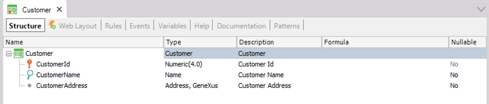
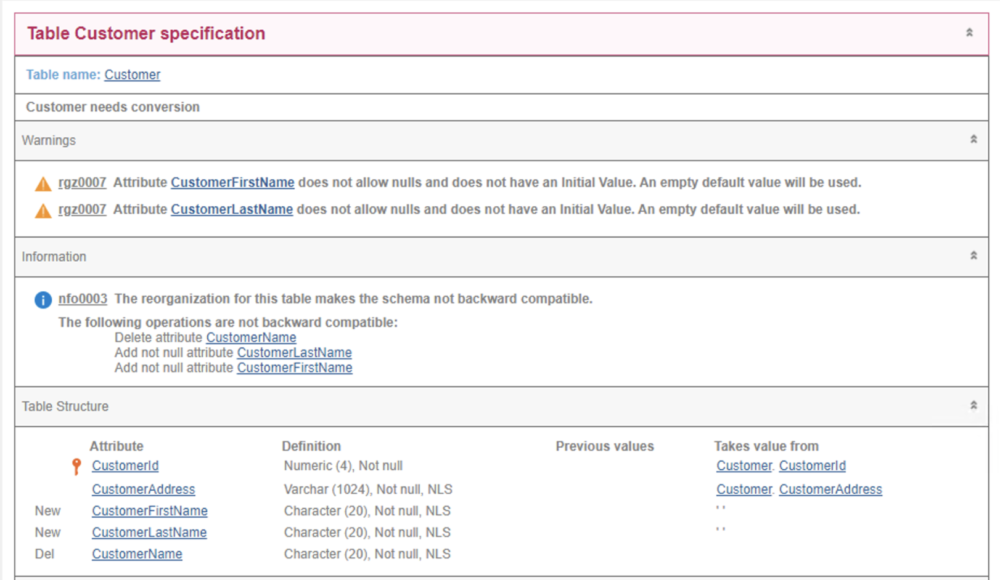

Scenario of backward compatible reorganizations
In some scenarios, it would be useful to know in advance whether a certain database reorganization may cause the current programs to be incompatible with the new DB schema.
To become aware of these situations at an early stage, GeneXus has incorporated the following information message in the Impact Analysis Report:
nfo0003 The reorganization for this table makes the schema not backward compatible.
Thus, you can choose to apply the change in the database or perform the reorganization differently to maintain compatibility with the current programs.
Below is a description of some of the possible scenarios and the different controls currently performed at impact time.
Description
When a change is made to the data model, GeneXus not only impacts the database, but also regenerates all programs that may be affected by this change. That is, a change from version v1 to version v2 of the database also implies a change in the binaries (v1 → v2).
These changes in the data model don’t always generate new physical models or schemas that are compatible with the previous programs. In addition, it is not always possible to deploy v1 and v2 programs in a mutually exclusive way; that is, it is not always possible to prevent v1 and v2 programs from connecting to the database at the same time.
Below are some of these scenarios, where v2 programs have to coexist for a certain time with v1 programs, accessing the same v2 version of the database:
- High availability scenario and multiple nodes with load balancing: While some nodes are still running the old programs, others are already starting to run the new ones.
- A/B testing scenario: A segment of users is running the new programs while the rest are still running the old ones.
- Mini service architecture scenarios: Various apps, web apps, processes, services open to third parties, accessing the same database; only some of these apps need to be upgraded to v2 while the others must continue to work in v1.
Note that this time is indeterminate, as it can be seconds, but it can also be days or months.
For these scenarios, it is useful to know in advance whether the impact is timely, and to have the option of not enabling this type of reorganization.
For this purpose, GeneXus incorporates different verifications in the impact analysis, which make it possible to report these cases, and even to stop them when they appear.
Backward Incompatible Information Message in the Impact Analysis
The impact analysis report informs whether the reorganization to be performed on the table is “backward incompatible” with the current programs.
In the “Information” section, this message is displayed: “nfo0003 The reorganization for this table makes the schema not backward compatible”, with the corresponding description.
For example, suppose there is a “Customer” Transaction in production that is composed as follows (v1):

These changes are applied to the structure (v2) to represent the new reality:

Note that:
- Two new attributes, CustomerFirstName and CustomerLastName, are added
- CustomerName is deleted
The impact analysis report shows the following information:

They indicate that these changes are not backward compatible.
Therefore, if the current programs (v1) must continue to work with the new schema (v2), some actions will be necessary before executing this reorganization. For example, configuring the new attributes CustomerFirstName and CustomerLastName as Nullables (Nullable = Yes).
Compatibility controls
These are the compatibility controls made by GeneXus:
| Case | Change Made |
|---|---|
|
Add not null attribute %1 |
A new attribute %1 is added with Nullable=No |
|
Rename table %1 |
Table %1 is renamed |
|
Remove nullability for attribute %1 |
The Nullable property of the attribute %1 is changed to the value “No” |
|
Delete attribute %1 |
Attribute %1 is deleted from the table |
|
Delete table %1 |
Table %1 is deleted |
|
Rename attribute %1 |
Attribute %1 is renamed |
|
Change type for attribute %1 |
The data type of attribute %1 is changed |
|
Change length/decimals for attribute %1 |
The length for attribute %1 of Numeric type is changed |
|
Decrease length for attribute %1 |
The length of the numeric attribute %1 is changed to a smaller size |
|
Change primary key composition |
The composition of the table’s primary key is changed |
|
Add unique constraint %1 |
A new candidate key is created from the index %1 of the table |
|
Add foreign key constraint %1 |
A new foreign key is added which implies a new integrity constraint |
As design criteria for determining which cases to report, the above scenarios were considered. Therefore, cases are reported when:
- They would generate a SQL error in v1 programs. For example, if an attribute is deleted, v1 programs would give an “Invalid Column” error when trying to access it.
- They would generate great risks in v1 program navigations. For example, “Change primary key composition” doesn’t necessarily generate a SQL error, but it causes old programs to not navigate as expected and compromises data integrity.
How to avoid executing reorganizations of this type
To not only be informed, but also to stop these reorganizations, the message 'nfo0003' must be included in the list of Warnings treated as errors property.
Availability
Since GeneXus 17 upgrade 5.
See also
| Backlinks | ||
| Features of Reorganizations | GeneXus 17 upgrade 5 | Information messages at Specification time |